ORIGIN VCO
7 HP. VCO from the PUNO VINTAGE series.
Available waveforms are triangle, sawtooth and pulse. Coarse selects the octave and Fine pitch adjusts fine tuning. Pulse width sets the width of the pulse. The PWM input modulates that width and affects the pulse waveform. Both Pitch modulation inputs contribute to the pitch, each with its own amount control.
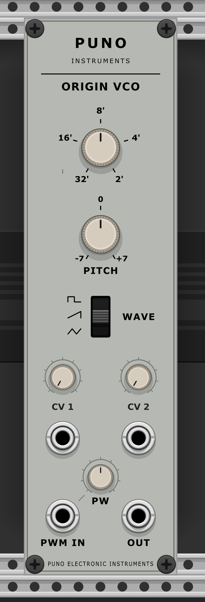
FORM VCF
7 HP. VCF from the PUNO VINTAGE series.
The three audio inputs are summed after their individual level controls and feed a single four-pole resonant low-pass filter. The three CV inputs modulate the cutoff together, each with adjustable amount and polarity. Cutoff and Resonance adjust the cutoff frequency and resonance. The main output carries the low-pass signal. The High-pass output applies additional high-pass filtering to the already filtered signal. The selector offers Off, 1 kHz, 2 kHz and 5 kHz. In the Off position, this output carries the low-pass signal.
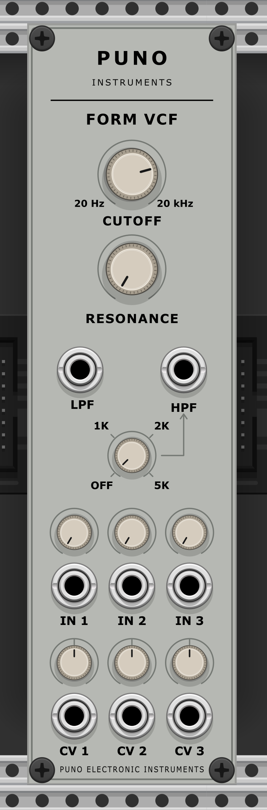
DYN VCA
7 HP. VCA with a three-input audio mixer, three CV inputs for the shared gain and a choice of Linear or Exponential response.
The three audio inputs are summed after their individual level controls and pass through a single amplification stage. The three CV inputs, each with adjustable amount and polarity, contribute to the shared gain along with Initial gain. Response selects Linear or Exponential. The setting labeled Exponential uses a cubic curve in place of an exact exponential curve. The main output is active. The legacy output is inactive and held at 0 V.
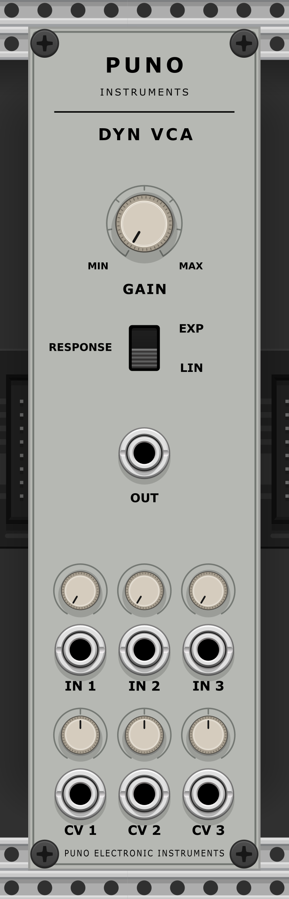
CONTOUR ADSR
7 HP. ADSR envelope with a manual gate and positive and inverted outputs.
Attack, Decay, Sustain and Release control the four stages of the envelope. The gate is active whenever the external input reaches at least 1 V or the manual button is pressed, including when both conditions are met. A retrigger edge restarts the attack from the current level only while the gate is active. The outputs provide the positive envelope from 0 to 10 V and an inverted copy from 0 to −10 V.
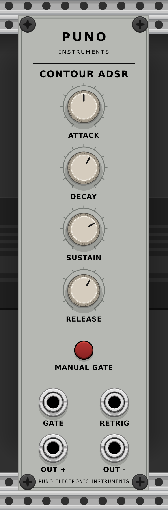
CYCLE LFO
7 HP. LFO with four waveforms, three frequency ranges and fade-in.
Frequency adjusts the rate within the selected range. Low covers 0.05–1.8 Hz, Mid covers 0.2–9 Hz and High covers 0.5–30 Hz. Frequency CV follows 1 V/octave and stays within the selected range. Waveform selects sine, triangle, sawtooth or pulse. Output level selects full level (up to ±5 V) or 1/10 level (up to ±0.5 V). The two outputs have opposite polarities. An edge at the Trigger input resets the phase and fade-in timer to zero. Fade-in gradually increases the amplitude to the selected level over 0–10 s. At 0 s the selected level is reached immediately.
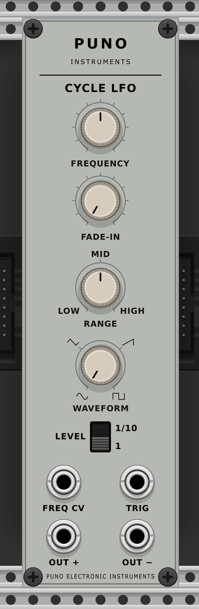
FUSE RING
7 HP. Bipolar ring modulator with two unnormalled inputs and one output.
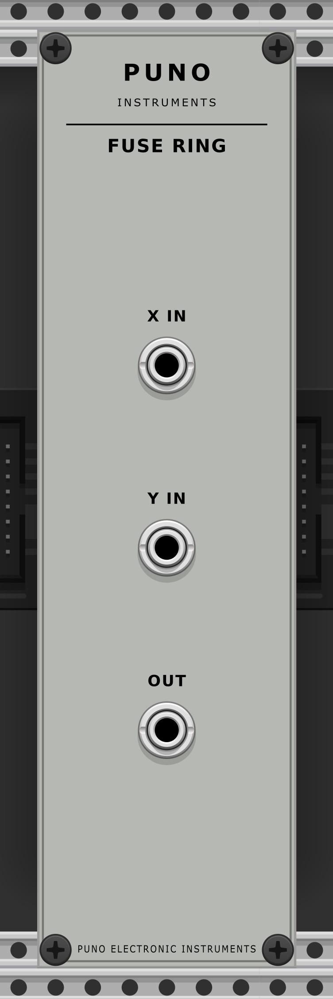
HISS NOISE
7 HP. White and pink noise, with two identical outputs per source.
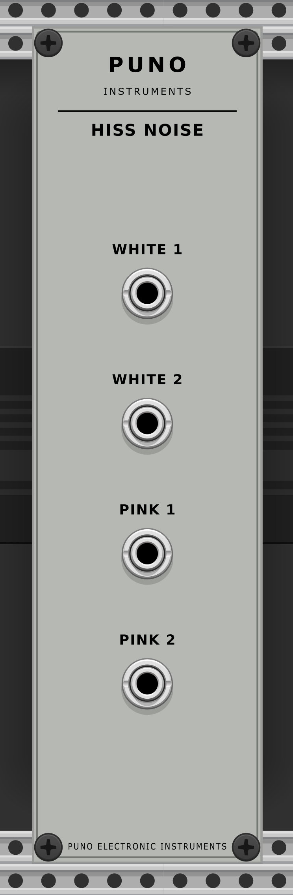
DRIFT S&H
7 HP. Sample & hold with internal white noise, external clock priority and lag.
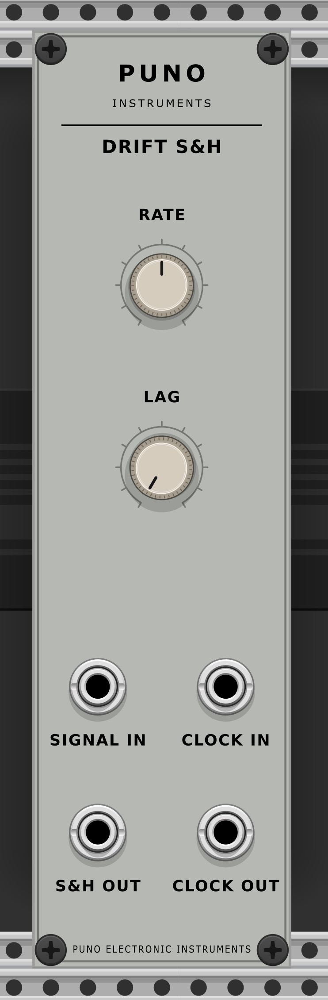
BLEND MIXER
7 HP. Four-input mixer with two copies each of the normal and inverted outputs. Inputs 3 and 4 are normalled to +10 V and −10 V respectively.
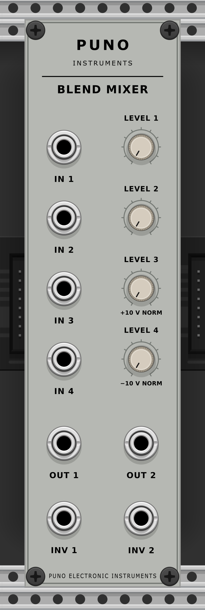
GLIDE PORTA
7 HP. Single-channel exponential portamento with a TIME slider and a variable-brightness LED.
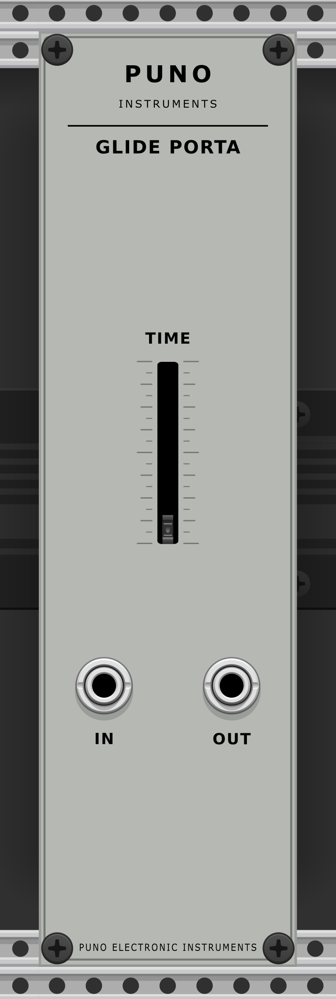
PASS GATE
7 HP. Two independent signal gates with positive CV, negative CV and OPEN LEDs.
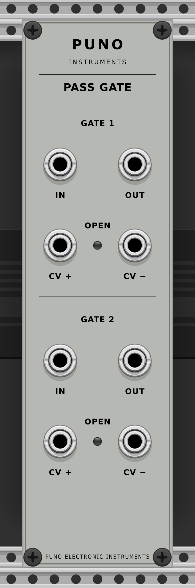
BRANCH MULTIPLE
7 HP. Six independent multiples, each with one input and two identical outputs.
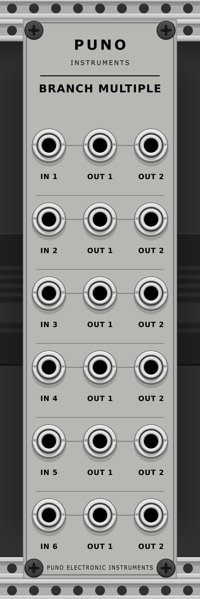
SWIRL PHASER
7 HP. Six-stage phaser with an internal triangle LFO and an external CV input.
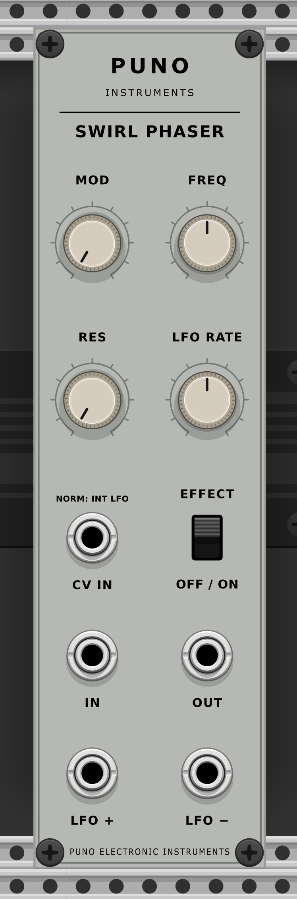
ECHO DELAY
7 HP. 1–7 ms audio delay with a triangle LFO, feedback and an effect bypass.
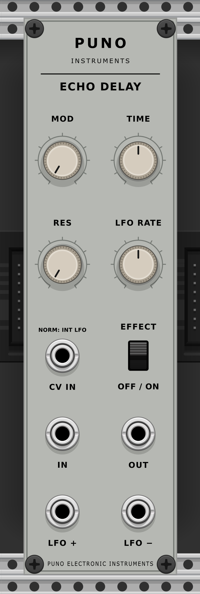
SHIFT GATE DELAY
7 HP. Gate delay with adjustable threshold, delay and duration, and a 10 V output.
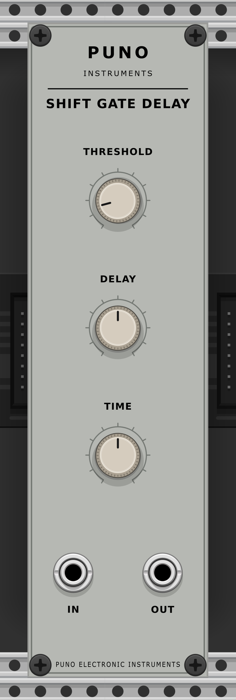
STRIDE SEQUENCER
21 HP. Two-channel, eight-step sequencer with parallel and series configurations and a horizontal panel.
Repeat advances on the internal clock and loops at the end of the sequence. Step advances on edges at the external trigger input only while the sequencer is running. Single uses the internal clock and stops at the end of the sequence. Tempo sets the internal clock rate, which can be modulated at the Tempo CV input. Start/Stop stops a running sequence and starts a stopped sequence from the first step. Changing Repeat/Step/Single or Parallel/Series returns to the first step and resets the clock and end-of-sequence trigger while preserving the running or stopped state. Step values can be adjusted while the sequencer runs. Channel configuration, DELAY and TRIG OUT are described below.
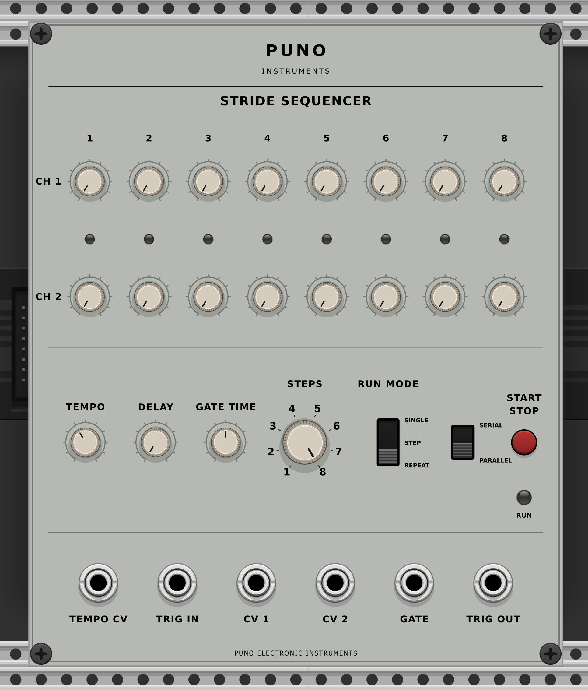
TONE EQ
14 HP. Four-band parametric EQ with two identical outputs, bypass and SIGNAL/CLIP indicators.
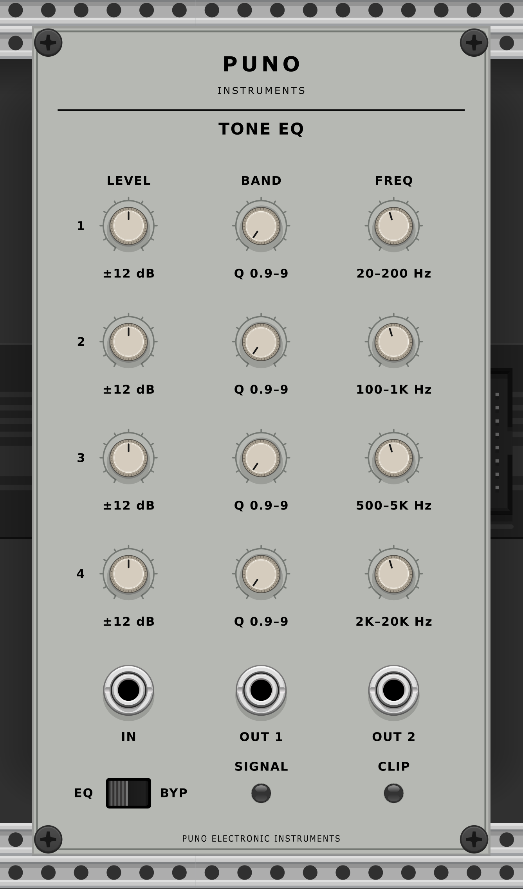
MAIN MIXER OUTPUT
14 HP. Four-channel stereo mixer with pan and fader controls, a reference oscillator, independent master and phones levels, and unnormalled inputs.
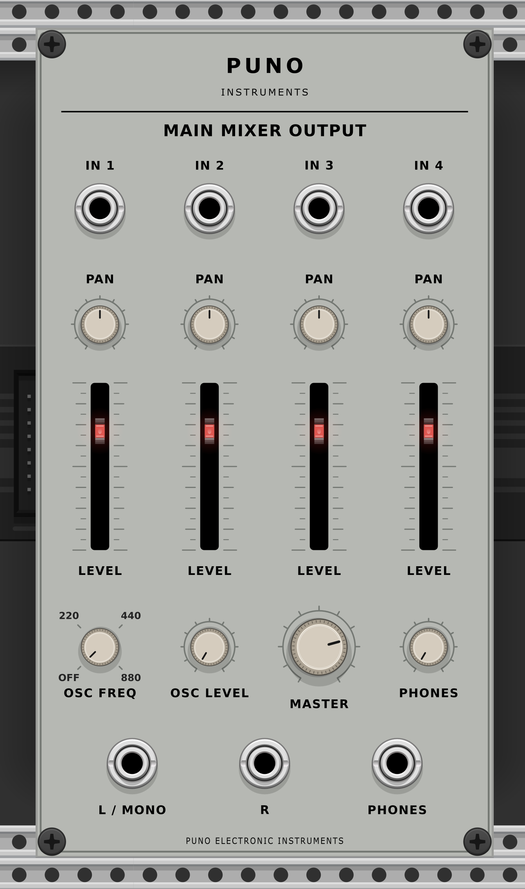
Connections and behavior
- HISS. The two WHITE outputs are identical to each other, as are the two PINK outputs.
- DRIFT. When SIGNAL IN is unpatched, the module uses white noise. An external clock at CLOCK IN takes priority for sampling. CLOCK OUT always carries the internal clock. RATE ranges from 0.1 to 50 Hz and LAG ranges from 0 to 5 s.
- FUSE. The product X×Y/5 is limited to ±10 V. The inputs are unnormalled.
- BLEND. IN 3 and IN 4 are normalled to +10 V and −10 V respectively. There are two copies of the sum and two copies of the inverted sum, with a ±10 V limit.
- GLIDE. The exponential time constant ranges from 0.01 to 3 s. LED brightness is proportional to TIME.
- PASS. With only CV + patched, the gate opens above 3 V. With only CV − patched, it opens below 1.5 V. With both patched, it opens when CV + > 3 V and CV − ≥ 1.5 V. With neither patched, the gate stays closed.
- BRANCH. The six monophonic sections are independent and have no normalled connections between them.
- SWIRL and ECHO. The internal triangle LFO ranges from 0.02 to 10 Hz and has opposite ±5 V outputs. External CV replaces the modulation source.
- ECHO. The short delay spans 1–7 ms, with feedback from 0 to 0.85 and a fixed 50/50 mix. The delay is too short to produce widely spaced repeats.
- SHIFT. Delay and duration range from 0.3 ms to 6 s, the threshold ranges from 0.3 to 5 V and the pulse is 10 V. The module ignores new edges during the delay or pulse.
- STRIDE. The two channels each have eight values from 0 to 5 V. PARALLEL runs for 1–8 steps. SERIES runs for 8 + STEPS on CV 1. DELAY smooths only CV 1. TRIG OUT signals the end of the sequence.
- TONE. The four parametric bands have ±12 dB of gain adjustment and a Q range of 0.9–9. The frequency ranges are 20–200 / 100–1000 / 500–5000 / 2000–20000 Hz. The two outputs are identical and bypass transitions gradually.
- MAIN. The mixer has four unnormalled inputs, equal-power pan and faders with LEDs. The oscillator settings are OFF/220/440/880 Hz. MASTER and PHONES are independent. When MASTER R is unpatched, MASTER L/MONO provides 0.5 × (L + R), the average (attenuated sum) of the two master channels. PHONES carries L and R on the first two channels of the Rack cable.
These notes describe the behavior of the current code. The audio and functionality are unchanged.